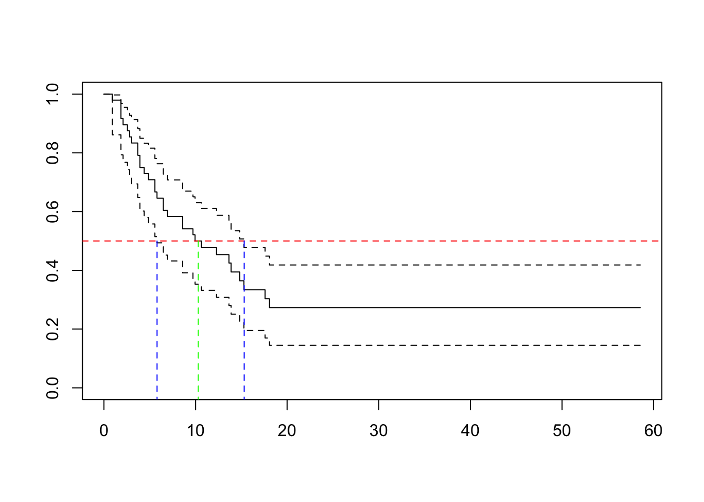

3 Nonparametric Survival Curve Estimation
3.1 Nonparametric Estimation of the Survival Function
product-limit estimator/Kaplan-Meier estimator (Kaplan and Meier, 1958): the product over the failure times of the conditional probabilities of surviving to the next failure time,
\[\hat{S}(t)=\prod_{t_i \le t}(1-\hat{q}_i) = \prod_{t_i \le t}(1-\frac{d_i}{n_i})\]
, where
- \(n_i\) is the number of subjects at risk at time \(t_i\)
- \(d_i\) is the number of individuals who fail at that time.
Back to example 1.1
The median survival time is at t=6, which is the smallest time t such that S(t)<=0.5.
Based on “delta method”, the sampling variance of \(log(\hat{S}(t))\),
\[var(log \hat{S}(t))=\sum_{t_i \le t}var(log(1-\hat{q}_i))\approx \sum_{t_i \le t}\frac{d_i}{n_i(n_i-d_i)}\]
Use the delta method again,
\[var(\hat{S}(t)) \approx [\hat{S}(t)]^2\sum_{t_i \le t}\frac{d_i}{n_i(n_i-d_i)}\]
Another (more satisfying) approach is via the complementary log-log transformation of \(\hat{S}(t)\)
\[var(log[-log \hat{S}(t)]) \approx \frac{1}{[log \hat{S}(t)]^2}\sum_{t_i \le t}\frac{d_i}{n_i(n_i-d_i)}\]
library(survival)
time = c(7,6,6,5,2,4)
status=c(0,1,0,0,1,1)
Surv(time, status)## [1] 7+ 6 6+ 5+ 2 4result.km = survfit(Surv(time, status)~1)
result.km## Call: survfit(formula = Surv(time, status) ~ 1)
##
## n events median 0.95LCL 0.95UCL
## [1,] 6 3 6 4 NAsummary(result.km)## Call: survfit(formula = Surv(time, status) ~ 1)
##
## time n.risk n.event survival std.err lower 95% CI upper 95% CI
## 2 6 1 0.833 0.152 0.583 1
## 4 5 1 0.667 0.192 0.379 1
## 6 3 1 0.444 0.222 0.167 1## the default value for conf.type option is "log"
result.km2 = survfit(Surv(time, status)~1, conf.type="log-log")
summary(result.km2)## Call: survfit(formula = Surv(time, status) ~ 1, conf.type = "log-log")
##
## time n.risk n.event survival std.err lower 95% CI upper 95% CI
## 2 6 1 0.833 0.152 0.2731 0.975
## 4 5 1 0.667 0.192 0.1946 0.904
## 6 3 1 0.444 0.222 0.0662 0.785layout(matrix(1:2,1,2))
plot(result.km, main="log")
plot(result.km2, main="log-log")An alternative estimator of the survival function is Nelson-Aalen estimator/Fleming and Harrington, based on the relationship of the survival function to the hazard function
\[S(t)=e^{-H(t)}\text{ and } H(t)=\sum_{t_i \le t}\frac{d_i}{n_i}\]
result.fh = survfit(Surv(time, status)~1, conf.type="log-log", type="fh")
summary(result.fh)## Call: survfit(formula = Surv(time, status) ~ 1, conf.type = "log-log",
## type = "fh")
##
## time n.risk n.event survival std.err lower 95% CI upper 95% CI
## 2 6 1 0.846 0.141 0.306 0.977
## 4 5 1 0.693 0.180 0.229 0.913
## 6 3 1 0.497 0.210 0.101 0.807Back to example 1.2
library(asaur)
timeMonths = gastricXelox$timeWeeks * 7 /30.25
delta = gastricXelox$delta
result.km = survfit(Surv(timeMonths, delta)~1, conf.type="log-log")
plot(result.km, conf.int=T, mark="|", xlab="Time in months", ylab="Survival probability",
main="Progression-free survival in gastric cancer patients")
3.2 Finding the median survival and a confidence interval for the median
Formally, the median survival time is defined as \(\hat{t}_{med}=inf\{t: \hat{S}(t) \le 0.5\}\). That is the smallest t such that the survival function is less than or equal to 0.5.
To find a \(1-\alpha\) confidence interval for the median, we consider the following inequality:
\[-z_{\alpha/2}\le \frac{g(\hat{S}(t))-g(0.5)}{\sqrt{var[g(\hat{S}(t))]}} \le z_{\alpha/2}\]
, where \(g(u)=log[-log(u)]\) and \(var[g(\hat{S}(t))]\) has been given above
result.km## Call: survfit(formula = Surv(timeMonths, delta) ~ 1, conf.type = "log-log")
##
## n events median 0.95LCL 0.95UCL
## [1,] 48 32 10.3 5.79 15.3plot(result.km)
abline(h=0.5, col="red", lty=2)
segments(x0 = 10.3, y0 = -1, x1 = 10.3, y1 = 0.5, col = "green", lty = 2)
segments(x0 = 5.79, y0 = -1, x1 = 5.79, y1 = 0.5, col = "blue", lty = 2)
segments(x0 = 15.3, y0 = -1, x1 = 15.3, y1 = 0.5, col = "blue", lty = 2)
3.3 Median Follow-up Time
A simple definition is to consider all of the survival times
A perhaps better way is to first switch the censoring and death indicators, and then computes the KM estimate. This method is also known as the “reverse” Kaplan-Meier.
delta.followup = 1-delta
survfit(Surv(timeMonths, delta.followup)~1)## Call: survfit(formula = Surv(timeMonths, delta.followup) ~ 1)
##
## n events median 0.95LCL 0.95UCL
## [1,] 48 16 27.8 21.1 50.2